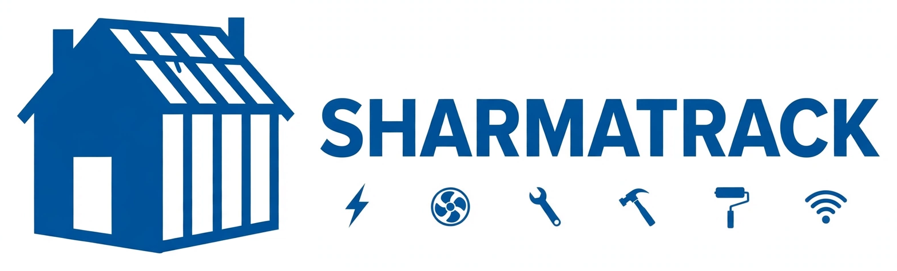

SHARMATRACK is Sharma Electric & HVAC's field app for construction job tracking. Crews use it on job sites for photo checklists, schedules, and tracking each house and job from start to finish — and builders see it all from their own link.
SHARMATRACK isn't software you buy. It's Sharma — our crews, our checklists, our accountability — made visible. The app just shows you how we work, house by house, photo by photo.
Plain and simple — the way a job site actually runs. Six steps, start to finish.
Every builder gets a personalized SHARMATRACK edition — their logo, their houses, and their own private link. No shared logins, no mixing jobs between builders.
Every house and job gets its own page with the address, plan, schedules, drawings, and job details — everything for that house in one place.
On site, crews work through a step-by-step photo checklist. A photo proves each step was done — no guessing, no “trust me” phone calls.
Progress counts update as photos come in — for example, 7 of 16 steps done. Anyone can see where a house stands in seconds.
Schedules, permit and inspection status, and overall job status are tracked on the same page as the work itself.
The builder opens their own link and sees the same progress the crew sees. No app to install, and it works on any phone.
Dunnellon, FL · Plan: NONA
7 of 16 steps donePhoto checklist progress for this house
Open a house and you know where it stands — what is done, what is next, and what the photos show. No text-message chains, no digging through camera rolls, no calls to the field just to ask “are we done there?”
That is the whole idea behind SHARMATRACK: the work proves itself, step by step, with photos.
Built for the field — big, clear, and fast on a phone, even with gloves on and sun on the screen.
Your own edition, your own link — open it any time and see every house moving.
SHARMATRACK was built for residential Florida builders — and for every trade that works on the house, not just one.

One SHARMATRACK — personalized for each builder.
The first SHARMATRACK builder edition is live for Z Brothers Construction — their logo, their houses in Dunnellon, Florida, and their own link. Their crews work the photo checklists on it every day, and the live crew app runs at sharmatrack-crew.pages.dev.
Your edition works the same way: your logo on the front, your houses inside, and a link that is yours alone.
SHARMATRACK is Sharma Electric & HVAC's own field app for construction job tracking, built for residential Florida builders and all trades. It was created to replace guesswork with proof — photo checklists, clear progress counts, and one page for every house, from the first rough-in photo to the final trim.
Developed by Sanjay Sharma